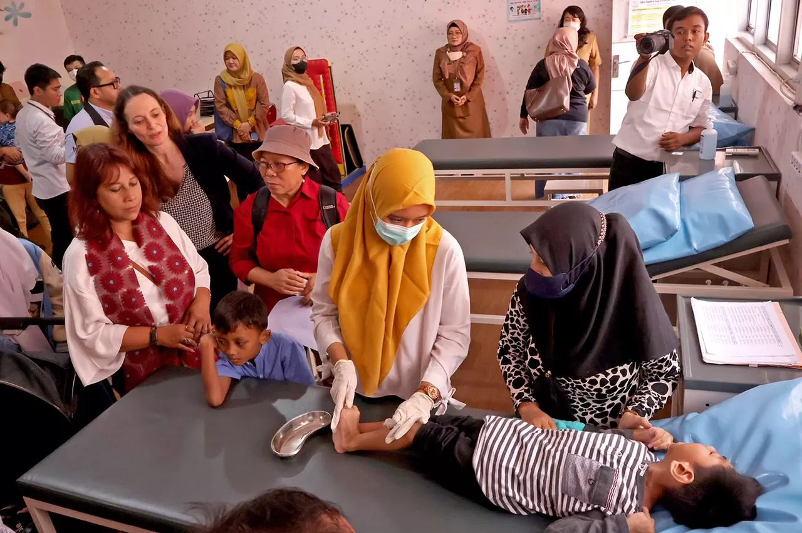
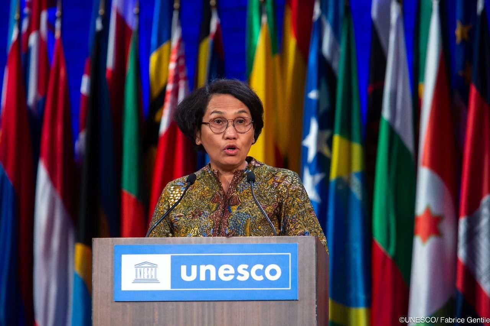
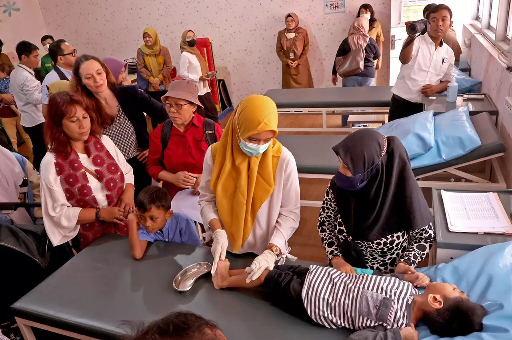
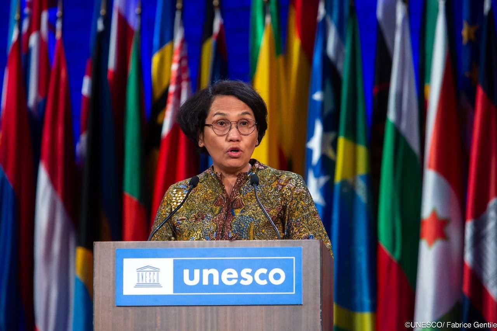
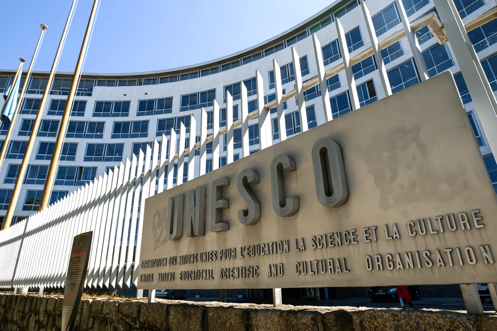

1. Bidang Ekonomi
- WTO (World Trade Organization): Mengelola lalu lintas perdagangan antarnegara serta menyelesaikan perselisihan dagang. Sejak 1 Januari 1995, Indonesia bekerja sama dengan WTO untuk meningkatkan perdagangan internasional, menyelesaikan sengketa dagang, dan mendorong akses pasar. Indonesia terlibat dalam negosiasi putaran Doha yang bertujuan meningkatkan perdagangan global.
- IMF (International Monetary Fund): Menjaga stabilitas sistem keuangan internasional. Indonesia adalah anggota IMF sejak 1954. IMF memainkan peran besar selama krisis ekonomi Asia 1997-1998 dengan memberikan bantuan keuangan kepada Indonesia.
- IBRD (International Bank for Reconstruction and Development): Indonesia telah menjadi anggota pada 1954. Bank Dunia mendukung proyek pembangunan di Indonesia seperti infrastruktur, pendidikan, dan kesehatan. Contoh: proyek peningkatan akses air bersih.
2. Bidang Sosial
- ILO (International Labour Organization): Indonesia adalah anggota ILO sejak 1950. ILO membantu meningkatkan hak-hak buruh di Indonesia, termasuk memberi upah yang adil, penghapusan pekerja anak, dan kondisi kerja yang aman.
- UNICEF (United Nations Children's Fund): UNICEF aktif di Indonesia sejak 1948 dan mendukung program untuk meningkatkan kesehatan anak, pendidikan, dan perlindungan anak. Contoh: kampanye imunisasi polio dan penyediaan pendidikan di daerah terpencil.

3. Bidang Pendidikan
- UNESCO (United Nations Educational, Scientific and Cultural Organization): Sejak 1950, UNESCO mendukung Indonesia dalam pelestarian warisan budaya (contoh : Candi Borobudur dan Candi Prambanan), pendidikan dan penelitian ilmiah. Contoh: pemberian status Warisan Dunia untuk beberapa budaya Indonesia.
